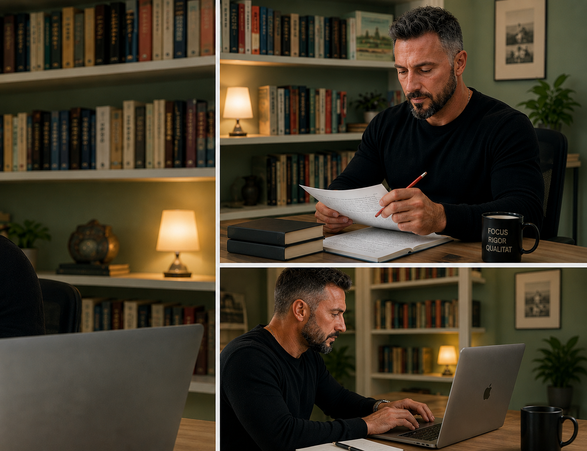
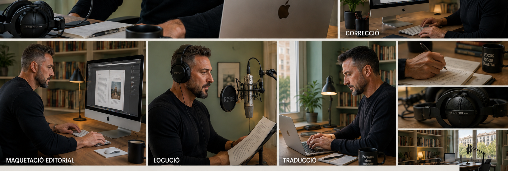
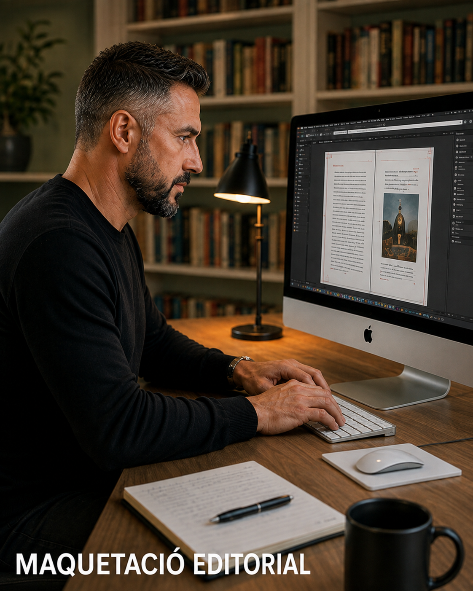

Serviços linguísticos e editoriais
As palavras importam.
A forma de as dizer, ainda mais.
Colaboro com agências de tradução e empresas de serviços editoriais que procuram qualidade, rigor e cumprimento de prazos.

Em que posso ajudar?
Um único profissional para cinco especialidades.
Um serviço flexível para reforçar equipas editoriais e linguísticas em períodos de maior carga de trabalho, projetos especializados ou colaborações continuadas.
Tradução
Inglês e português para catalão e espanhol, e tradução entre catalão e espanhol.
Revisão
Revisão ortotipográfica e de estilo com critério editorial, coerência e atenção ao detalhe.
Edição de livros
Editei cerca de cinquenta livros próprios, coordenando todas as fases do processo editorial: revisão, correção, paginação, preparação para impressão e publicação digital.
Paginação editorial
Design e paginação profissional de livros impressos e digitais, preparados para gráfica ou plataformas como a Amazon KDP.
Locução
Locução profissional para audiolivros, anúncios de rádio, vídeos institucionais e conteúdos digitais gravados em estúdio próprio.

Como trabalho
Compreender o projeto antes de o iniciar.
Cada trabalho parte de uma ideia muito simples: o resultado só pode ser bom se corresponder exatamente ao que o cliente pretende comunicar.
Escuto
Defino o objetivo, o público, o registo e as necessidades do projeto.
Trabalho
Traduzo, revejo, pagino ou faço locução com rigor e critério profissional.
Revejo
Revejo o conjunto para garantir um resultado coerente, natural e preciso.
Entrego
Cumpro o prazo acordado e proporciono uma colaboração ágil e clara.

Jordi Conde Baltrons
Experiência editorial, sensibilidade linguística e compromisso.
Depois de concluir a licenciatura, em 2001, comecei a trabalhar em serviços editoriais. Desde então, desenvolvi a minha carreira profissional nas áreas da tradução, revisão, edição de livros, paginação editorial e locução.
Trabalhei em livros de história, cultura, geografia, ambiente, matemática, valores éticos e religião, entre outras áreas. A minha forma de trabalhar combina rigor, eficiência, pontualidade e uma atenção especial à verdadeira intenção do cliente.
Locução profissional
Uma voz clara, natural e versátil.
Ouça algumas amostras de diferentes registos de locução.
01
Anúncio de rádio
Tom profissional, próximo e credível.
02
Audiolivro
Narração natural, expressiva e consistente.
03
Vídeo digital
Registo dinâmico para vídeos e conteúdos multimédia.
Falemos do seu projeto
Procura um colaborador de confiança?
Explique-me do que necessita e responderei com uma proposta adaptada ao projeto.